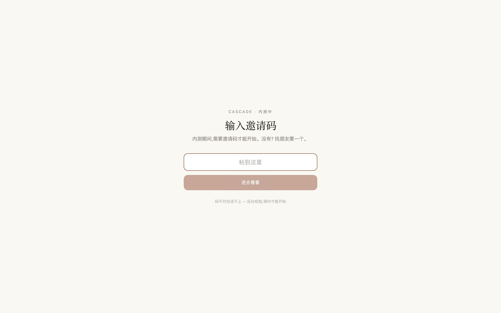
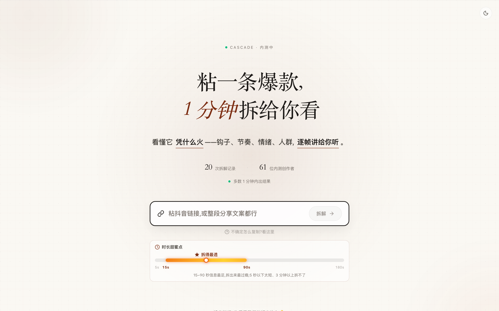
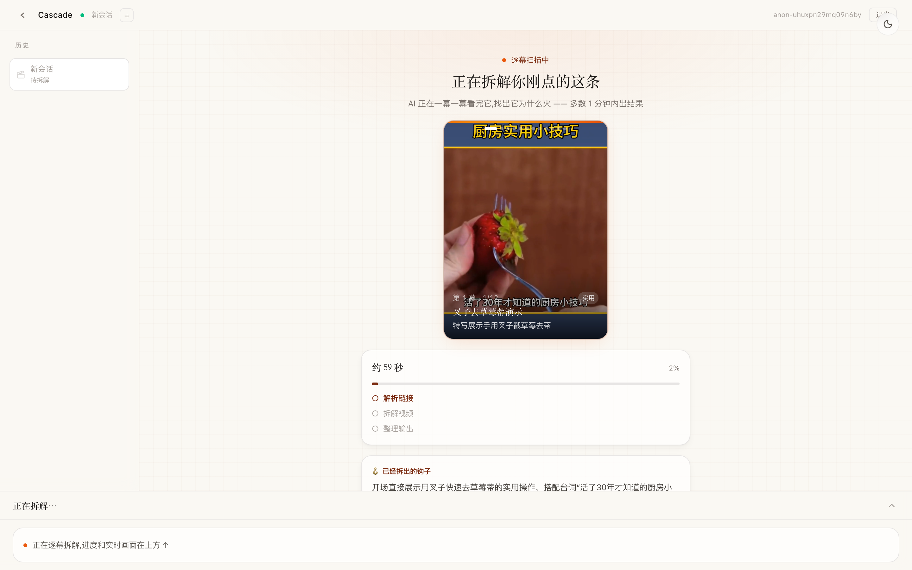
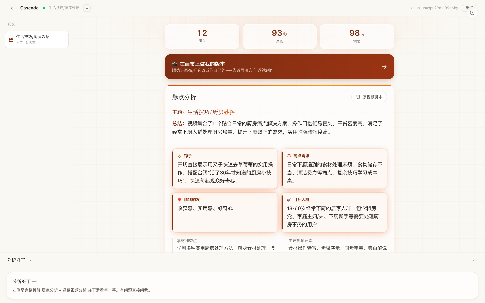
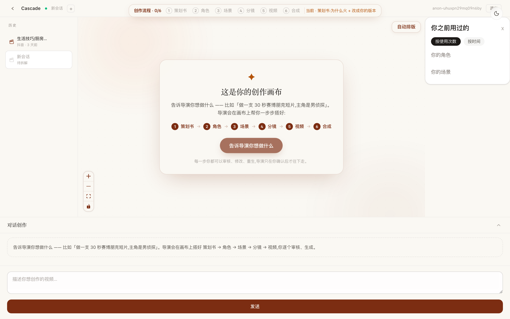
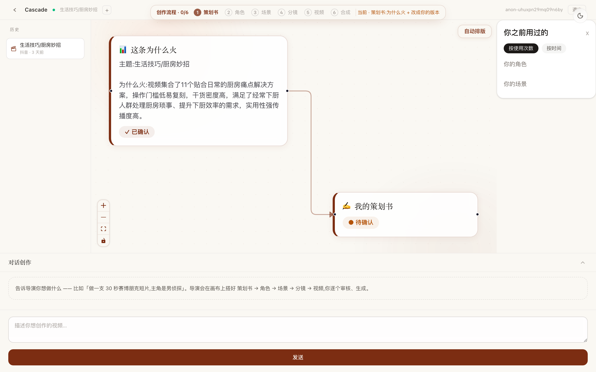
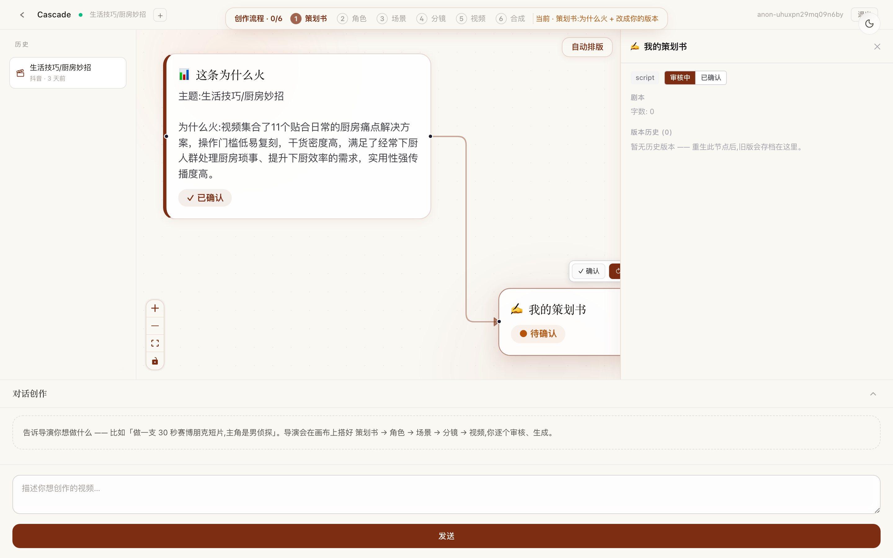

这份手册每一步都配真实截图，照着图上圈出来的地方点就行。你不用懂剪辑、不用懂脚本—— 只要会刷抖音、会复制链接、会用大白话说一句「我想做支这样的视频」，剩下的交给画布里的 AI「导演」。
第一次打开 Cascade，会先让你填邀请码（产品方发给你的「门票」）。

进来后，在落地页粘一条抖音链接，让 Cascade 把它拆开。懒得找链接？直接点下面轮播的案例卡也行。

点完之后进入「分析中」。画面会播你刚选那条视频的封面、逐幕扫描、配进度点，还会把已经拆出来的「钩子」先给你看。

拆完你会看到「爆点分析」卡：主题、为什么火，以及钩子／痛点／情绪／人群四个维度。往下滑还有逐幕的「视频分析」。看明白套路后，就开始做你自己的。

进来是一张白板。顶部那条「创作流程」六步进度条会告诉你走到哪了（策划书→角色→场景→分镜→视频→合成）。现在把你想做什么告诉导演。

导演会在画布上一步步搭出节点并用箭头连起来：策划书 → 角色 → 场景 → 分镜 → 视频 → 合成。你的任务是「看一眼 → 满意就确认」。

选中任一节点，右侧会弹出详情面板。图片/视频节点可以在这里改 Prompt（生成指令）、设参数，然后点生成；这里也能切「审核中／已确认」、翻版本历史。

整片合成后，会出现一张「准备发出去」卡片。一键把标题、话题、脚本、镜头图、成片打成一包复制，直接去抖音粘贴就能发。